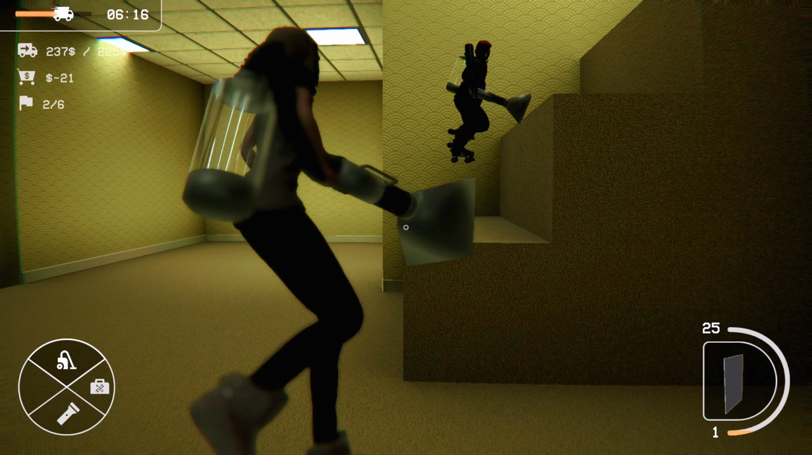
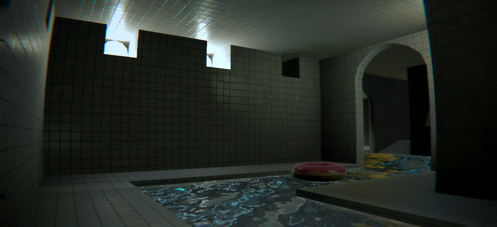

The Scraprooms is a proximity chat multiplayer extraction game where you and up to five friends explore a procedurally generated backrooms in search of valuable props to save your struggling company from financial ruin. Players must use their trusty vacuum gun to obtain as many props as they can, balancing greed and survival as they explore. They can spend their earnings to revive teammates, purchase upgrades, or repair elevators to unlock lower floors. The game was developed as a pitch project through UCI’s Video Game Development Club in Spring 2025 and was continued over Summer 2025 outside of the pitch program.
The Scraprooms

Friendslop Extraction Horror Game


Design & Development
I pitched The Scraprooms concept and led an 11-member team through a five-month development cycle to create a polished vertical slice of the game. I implemented online multiplayer and integrated proximity-based voice chat using Photon Fusion and Vivox. To maximize performance while having potentially hundreds of physics simulated props in game, I designed and built a hybrid networked object system that minimized the number of network-synchronized objects.